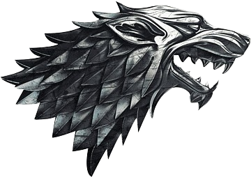
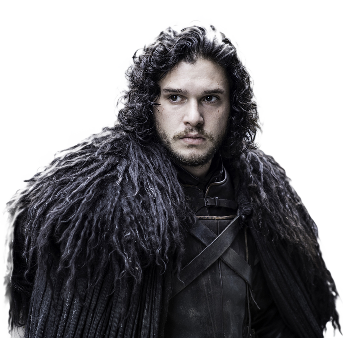

Jon Snow
 
Mario Party DS is a 2007 party video game developed by Hudson Soft and
published by Nintendo for the Nintendo DS. It is the second handheld
game in the Mario Party series, as well as the last game in the series
to be developed by Hudson Soft, as all subsequent games have been
developed by NDcube. Like most installments in the Mario Party series,
Mario Party DS features characters of the Mario franchise competing in
a board game with a variety of minigames, many of which utilize the
console's unique features, including its built-in microphone, dual
screen and touch screen mechanics, and motion sensitivity. Up to four
human players can compete at a time, though characters can also be
computer-controlled. Although Mario Party DS received mixed reviews,
with general praise for its minigame variety and criticism for its
absence of an online multiplayer mode, the game has sold more than
nine million units worldwide, making it the 11th-best-selling game for
the Nintendo DS.